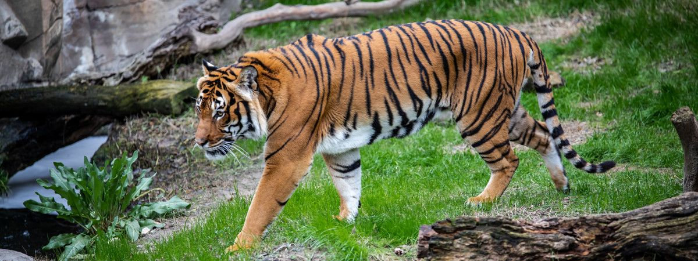
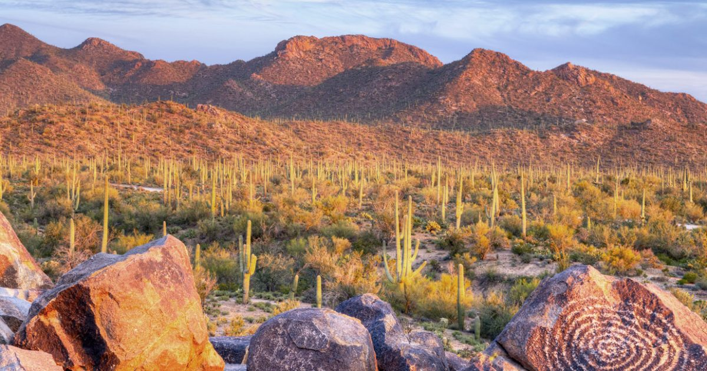

Importance of Protected areas:
Protected areas are crucial in minimising the impacts of a wide range of natural disasters in different habitat types.They maintain water supplies in a region of fragmented or denued areas because they can absorb and then gradually release water into the soil,plants and streams.They may also help control the emergence and rapid spread of a wide range of diseases including malaria, leishmaniasis, trpanosomiasis and filariasis, which are reported to be caused by massive ecological disturbances.They are a vital sources of important traditional medicines and support a wide range of natural genetic resources, providing material for commercial medications.They offer special conservation benefits for species and ecological processes that cannot survive outside these landscapes and support good numbers of rare and threatened species not found elsewhere.
Websites covering related issues and strategies:-
 